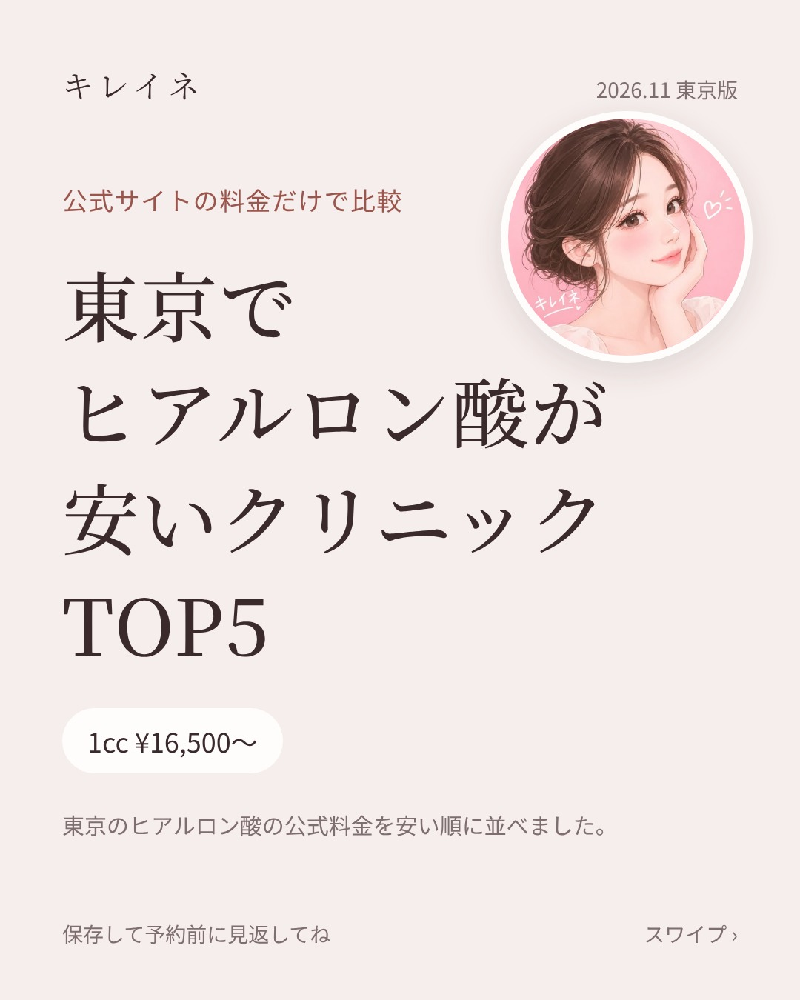
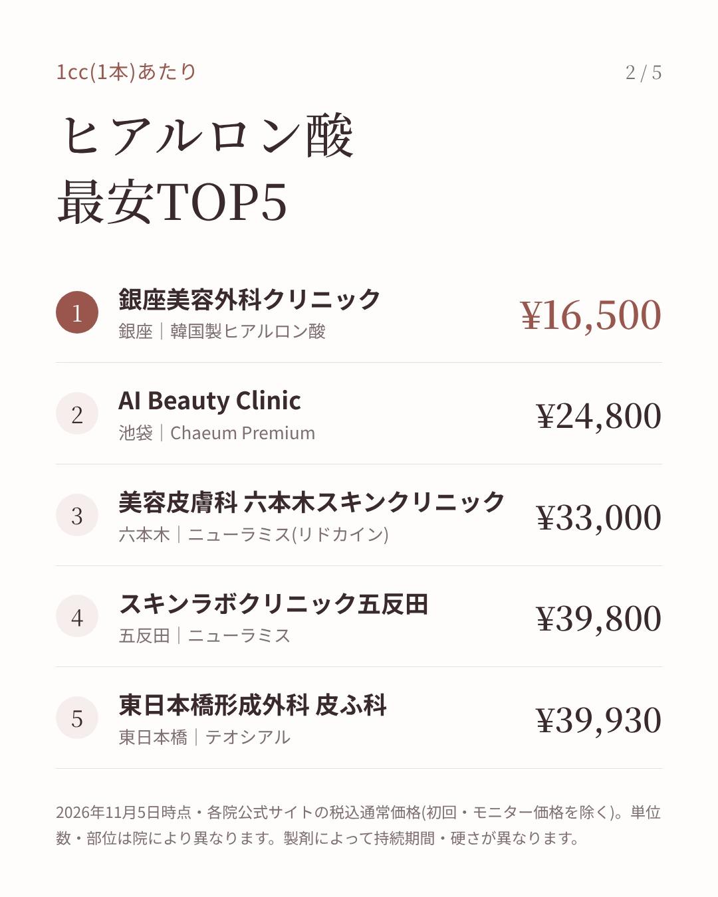
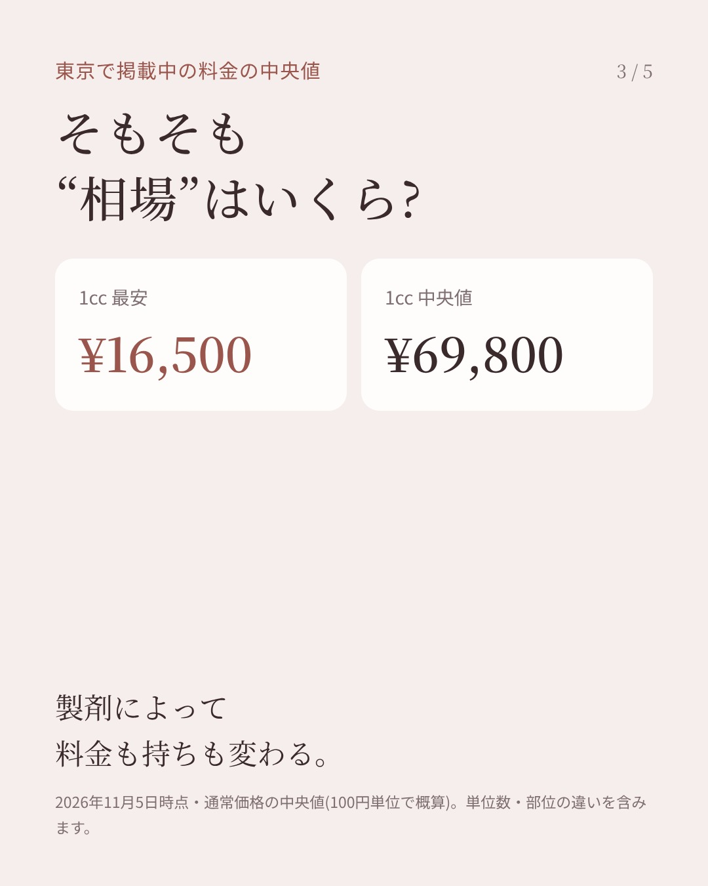
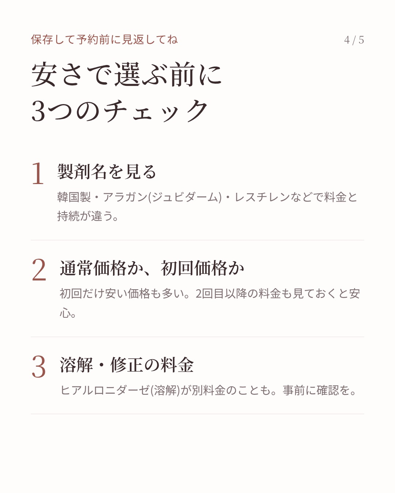
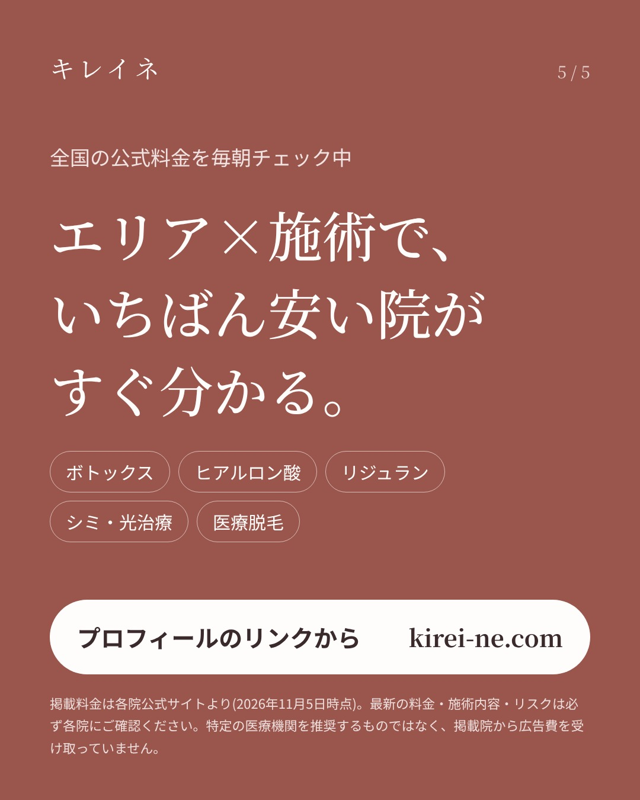

画像を長押し →「写真に保存」(01から順に)
同じ銀座の中で、ヒアルロン酸1ccが ¥16,500 の院と ¥121,000 の院があって、毎朝の料金チェック中に手が止まった。 東京で公式サイトに料金が出ている26院を、安い順に並べてみました。 差がここまで開く理由の多くは「製剤」。 韓国製・ジュビダーム・レスチレンで値段も持ちも変わるので、 ランキングの横に製剤名も入れてます。 もうひとつ、溶解(ヒアルロニダーゼ)が別料金の院もあるから 予約前にそこだけは見ておいてね。 みんなは製剤で選ぶ？値段で選ぶ？ 全院の比較はプロフィールのリンク(kirei-ne.com)から。 ※11/5時点・各院公式サイトの税込通常価格。最新は各院へ。広告費は受け取っていません。 #ヒアルロン酸 #ヒアルロン酸注入 #美容皮膚科 #美容医療 #銀座美容